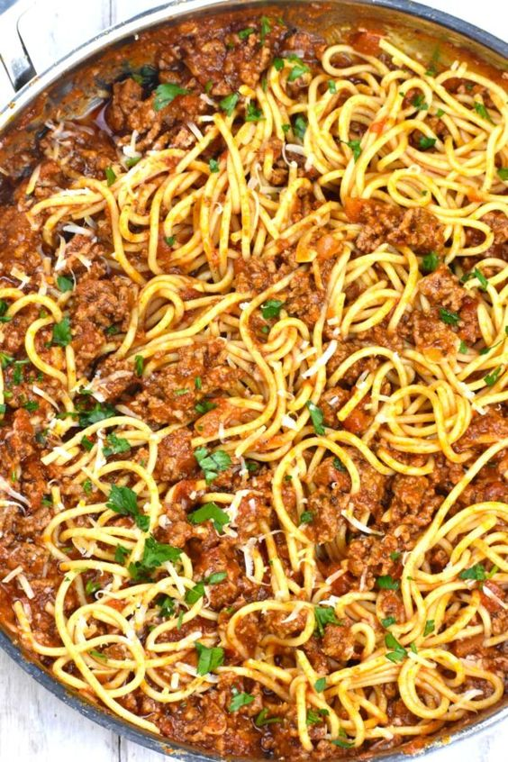

Spaghetti with Meat Sauce

Description
This Spaghetti with Meat Sauce recipe will take you straight to your childhood days. You are going to love this super meaty and saucy classic combination for sure.
A perfect cozy meal to make your weekend dinner special, it’s one of the classic spaghetti recipes.
Ingredients
- Ground Beef
- Garlic
- Olive Oil
- Marinara Sauce
- Seasonings-basil, oregano, red chili flakes, salt and sugar
- Spaghetti pasta
Steps
- Heat the olive oil in a large skillet. Add the meat, and break it up with a wooden spoon. Cook till there is no more pink.
- Add the garlic and cook another minute or two. Then, stir in sauce and seasonings. Bring it to a low boil, then reduce heat and simmer.
If you're in a hurry, simmer for 30 minutes, but for best flavor, simmer at least 2 hours. Towards the end, taste and adjust for salt and sugar.
- Cook the pasta in boiling salted water, to your preferred tenderness. Drain in a colander.
- For serving, you can either plate the pasta, then top it with sauce, or mix everything together in the pan. Top with freshly grated parmesan cheese.